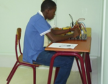
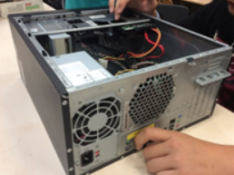
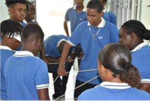

Adres hoofdgebouw
Wageningenstraat z/n
Telefoon
+5999 - 461 - 18 38
decanaat.nildapinto@gmail.com
Nilda Pinto SBO
Nilda Pinto SBO biedt opleidingen aan binnen het SBO op verschillende niveaus en in de volgende studierichtingen:
Administratie
Handel
ICT
Horeca
Toerisme
Zorg & Welzijn
Dienstverlening
Zorg & Welzijn
Horeca
Auto
Bouw
Metaal
Elektro
Koudetechniek
Nautische Techniek
Het SBO heeft opleidingen op 4 niveaus: sbo niveau 1, 2, 3 en 4. De vooropleiding van een student bepaalt grotendeels op welk niveau hij of zij kan starten. Hieronder vind je een korte uitleg van elk niveau og de opleidingsduur.
| SBO-Niveau | Wat doe je? | Duur | Vooropleiding |
|---|---|---|---|
| Niveau 1 |
Assistent
Je voert onder toezicht eenvoudige werkzaamheden uit. |
1 jaar |
|
| Niveau 2 |
Basisberoeps-functionaris
Je voert zelfstandig praktische werkzaamheden uit. |
2 jaar |
|
| Niveau 3 |
Vakfunctionaris
Je voert zelfstandig werkzaamheden uit en draagt verantwoordelijkheid. |
2 tot 3 jaar |
|
| Niveau 4 |
Middenkader-functionaris
Je voert volledig zelfstandig werkzaamheden uit, draagt verantwoordelijkheid en je bent breed inzetbaar. |
3 tot 4 jaar |
|
Binnen het SBO kan je stapelen. Je kan bijvoorbeeld met een niveau 2 diploma verder studeren voor een niveau 3 opleiding. Dit hangt wel af van de soort opleiding.
Als je wilt, kun je met een niveau 4 diploma doorstromen naar het Hoger Beroepsonderwijs (HBO).
Wageningenstraat z/n
Steenrijk, Curacao
+5999 - 461 18 38
| Opleiding | Niveau | Duur | Toelatingseis |
|---|---|---|---|
| Administratie | |||
| Bedrijfs-/commercieel administratief medewerker | 2 | 2 | PBL |
| Boekhoudkundig medewerker | 3 | 3 | PKL of TKL |
| Administrateur | 4 | 1 | BM diploma |
| Handel | |||
| Ondernemer/Manager Detailhandel | 4 | 4 | TKL |
| ICT | |||
| Service Medewerker ICT | 2 | 2 | PBL |
| Medewerker Beheer ICT | 3 | 2 | PKL of TKL |
| Horeca | |||
| Horeca assistent | 1 | 1 | AGO of 2e kans |
| Kok | 2 | 2 | PBL |
| Bartender | 2 | 2 | PBL |
| Gastheer/-vrouw | 2 | 2 | PBL |
| Receptionist/Front office medewerker | 2 | 2 | PBL |
| Horeca Ondernemer/Manager | 4 | 3 | TKL |
| Toerisme | |||
| Zelfstandig Medewerker Toerisme Recreatie | 3 | 2 | PKL |
| Middenkaderfunctionaris Recreatie | 4 | 3 | TKL |
| Zorg en Welzijn | |||
| Zorghulp | 1 | 1 | AGO of 2e kans |
| Sociaal Pedagogisch Werker/Helpende Welzijn | 2 | 2 | PBL |
| Sociaal Pedagogisch Werker 3 | 3 | 3 | PKL |
| Sociaal Pedagogisch Werker 4 | 4 | 3 | TKL |
| Dienstverlening | |||
| Medewerker Facilitaire Dienstverlening | 2 | 2 | PBL |
| Supervisor Facilitaire Dienstverlening | 4 | 3 | PKL of TKL |
Lagoweg z/n
Suffisant, Curacao
+5999 - 868 52 06
| Opleiding | Niveau | Duur | Toelatingseis |
|---|---|---|---|
| Horeca | |||
| Horeca assistent | 1 | 1 | AGO of 2e kans |
| Kok | 2 | 2 | PBL |
| Bartender | 2 | 2 | PBL |
| Gastheer/-vrouw | 2 | 2 | PBL |
| Receptionist/Front office medewerker | 2 | 2 | PBL |
| Horeca Ondernemer/Manager | 4 | 3 | TKL |
| Zorg en Welzijn | |||
| Zorghulp | 1 | 1 | AGO of 2e kans |
| Sociaal Pedagogisch Werker/Helpende Welzijn | 2 | 2 | PBL |
| Sociaal Pedagogisch Werker 3 | 3 | 3 | PKL |
| Sociaal Pedagogisch Werker 4 | 4 | 3 | TKL |
Kaya Horacio Sprock 4
Brievengat, Curacao
+5999 - 736 39 00
| Opleiding | Niveau | Duur | Toelatingseis |
|---|---|---|---|
| Auto | |||
| Assistent Autotechniek | 1 | 1 | AGO of 2e kans |
| Assistent carrosserietechniek | 1 | 1 | AGO of 2e kans |
| Autotechnicus | 2 | 2 | PBL |
| Bouw | |||
| Timmerassistent | 1 | 1 | AGO of 2e kans |
| Metselassistent | 1 | 1 | AGO of 2e kans |
| Assistent Schilder | 1 | 1 | AGO of 2e kans |
| Schilder | 2 | 2 | PBL |
| Primairmetselaar | 2 | 2 | PBL |
| Metaal | |||
| Aspirant Lasser | 1 | 1 | AGO of 2e kans |
| Booglasser | 2 | 2 | PBL |
| Electro | |||
| Assistent Monteur Sterkstroominstallaties | 1 | 1 | AGO of 2e kans |
| Monteur Sterkstroominstallaties | 2 | 2 | PBL |
| Koudetechniek | |||
| Monteur Koudetechniek | 2 | 2 | PBL |
| Nautische Techniek | |||
| Schipper Beperkt werkgebied | 2 | 2 | PBL |
| Stuurman Werktuigkundige | 3 | 3 | PKL |

De Service medewerker ICT zorgt ervoor dat alle medewerkers op hun werkplek een goed functionerende computer hebben. Hij moet mensen helpen met computerproblemen, software installeren en ervoor zorgen dat de computer doet wat ervan verwacht wordt.
Service medewerkers ICT zijn op allerlei plaatsen te vinden. Je kunt terecht in verschillende organisaties, zoals een school, computerwinkel of een reparatiedienst. De Service medewerker ICT krijgt zijn opdrachten bijvoorbeeld van een Medewerker beheer ICT of een ICT-beheerder.

De Medewerker Beheer ICT werkt graag met computers en netwerken. En is namelijk de hele dag ermee bezig. Binnen een bedrijf zorg jij ervoor dat de computers en het netwerk goed werken. Je assisteert de systeembeheerder en je werkt aan de hand van opdrachten en werkinstructies die je ontvangt.
Tot de taken behoort het oplossen van storingen, het verhelpen en voorkomen van deze storingen. Ook leg je een infrastructuur aan voor bekabeling. Je zet computersystemen in elkaar, je installeert en configureert. Je geeft gebruikers instructies voor het werken met computers en netwerken. Je neemt meldingen in behandeling en lost deze op.

Als assistent autotechniek weet jij veel van voertuigen. Van trucks tot personenauto's. Onder begeleiding voert je werkzaamheden uit aan auto's. Je leert te werken met de gereedschappen en apparaten die je nodig hebt. Je leert technische werkzaamheden uit te voeren en hoe je een technicus het beste kunt assisteren. Onder de toezicht van de ervaren technicus voer je een voudige inspectie-, onderhouds- en reparatie werkzaamheden uit. Je leert ook hoe je je werkzaamheden veilig kunt uitvoeren.
- Je bereidt het werk voor.
- Je assisteert je collega's tijdens het werk.
- Je voert klein onderhoud uit en maakt voertuigen klaar voor de klant.
- Je helpt met het opruimen van gereedschappen en de werkruimte.
- Je houdt de werkplaats netjes.
Wageningenstraat z/n
+5999 - 461 - 18 38
decanaat.nildapinto@gmail.com
Nilda Pinto SBO